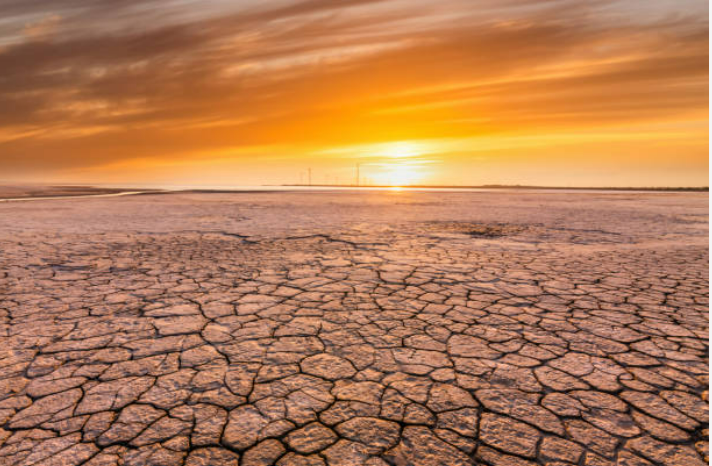
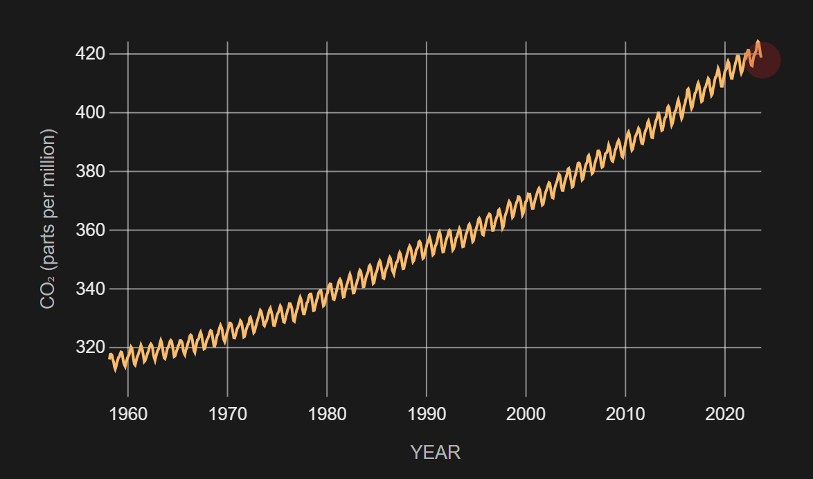

What Is Global Warming?
Global warming, the phenomenon of increasing average air temperatures near the surface of Earth over the past one to two centuries. Climate scientists have since the mid-20th century gathered detailed observations of various weather phenomena (such as temperatures, precipitation, and storms) and of related influences on climate (such as ocean currents and the atmosphere’s chemical composition). These data indicate that Earth’s climate has changed over almost every conceivable timescale since the beginning of geologic time and that human activities since at least the beginning of the Industrial Revolution have a growing influence over the pace and extent of present-day climate change.
Causes of Global Warming
The greenhouse effect
The average surface temperature of Earth is maintained by a balance of various forms of solar and terrestrial radiation. Solar radiation is often called “shortwave” radiation because the frequencies of the radiation are relatively high and the wavelengths relatively short—close to the visible portion of the electromagnetic spectrum. Terrestrial radiation, on the other hand, is often called “longwave” radiation because the frequencies are relatively low and the wavelengths relatively long—somewhere in the infrared part of the spectrum. Downward-moving solar energy is typically measured in watts per square metre. The energy of the total incoming solar radiation at the top of Earth’s atmosphere (the so-called “solar constant”) amounts roughly to 1,366 watts per square metre annually. Adjusting for the fact that only one-half of the planet’s surface receives solar radiation at any given time, the average surface insolation is 342 watts per square metre annually.The amount of solar radiation absorbed by Earth’s surface is only a small fraction of the total solar radiation entering the atmosphere. For every 100 units of incoming solar radiation, roughly 30 units are reflected back to space by either clouds, the atmosphere, or reflective regions of Earth’s surface. This reflective capacity is referred to as Earth’s planetary albedo, and it need not remain fixed over time, since the spatial extent and distribution of reflective formations, such as clouds and ice cover, can change. The 70 units of solar radiation that are not reflected may be absorbed by the atmosphere, clouds, or the surface. In the absence of further complications, in order to maintain thermodynamic equilibrium, Earth’s surface and atmosphere must radiate these same 70 units back to space. Earth’s surface temperature (and that of the lower layer of the atmosphere essentially in contact with the surface) is tied to the magnitude of this emission of outgoing radiation according to the Stefan-Boltzmann law.
Earth’s energy budget is further complicated by the greenhouse effect. Trace gases with certain chemical properties—the so-called greenhouse gases, mainly carbon dioxide (CO2), methane (CH4), and nitrous oxide (N2O)—absorb some of the infrared radiation produced by Earth’s surface. Because of this absorption, some fraction of the original 70 units does not directly escape to space. Because greenhouse gases emit the same amount of radiation they absorb and because this radiation is emitted equally in all directions (that is, as much downward as upward), the net effect of absorption by greenhouse gases is to increase the total amount of radiation emitted downward toward Earth’s surface and lower atmosphere. To maintain equilibrium, Earth’s surface and lower atmosphere must emit more radiation than the original 70 units. Consequently, the surface temperature must be higher. This process is not quite the same as that which governs a true greenhouse, but the end effect is similar. The presence of greenhouse gases in the atmosphere leads to a warming of the surface and lower part of the atmosphere (and a cooling higher up in the atmosphere) relative to what would be expected in the absence of greenhouse gases.

Radiative forcing
In light of the discussion above of the greenhouse effect, it is apparent that the temperature of Earth’s surface and lower atmosphere may be modified in three ways: (1) through a net increase in the solar radiation entering at the top of Earth’s atmosphere, (2) through a change in the fraction of the radiation reaching the surface, and (3) through a change in the concentration of greenhouse gases in the atmosphere. In each case the changes can be thought of in terms of “radiative forcing.” As defined by the IPCC, radiative forcing is a measure of the influence a given climatic factor has on the amount of downward-directed radiant energy impinging upon Earth’s surface. Climatic factors are divided between those caused primarily by human activity (such as greenhouse gas emissions and aerosol emissions) and those caused by natural forces (such as solar irradiance); then, for each factor, so-called forcing values are calculated for the time period between 1750 and the present day. “Positive forcing” is exerted by climatic factors that contribute to the warming of Earth’s surface, whereas “negative forcing” is exerted by factors that cool Earth’s surface.On average, about 342 watts of solar radiation strike each square metre of Earth’s surface, and this quantity can in turn be related to a rise or fall in Earth’s surface temperature. Temperatures at the surface may also rise or fall through a change in the distribution of terrestrial radiation (that is, radiation emitted by Earth) within the atmosphere. In some cases, radiative forcing has a natural origin, such as during explosive eruptions from volcanoes where vented gases and ash block some portion of solar radiation from the surface. In other cases, radiative forcing has an anthropogenic, or exclusively human, origin. For example, anthropogenic increases in carbon dioxide, methane, nitrous oxide, halogenated gases, and other factors are estimated to account for 2.72 watts per square metre of positive radiative forcing, relative to estimated 1750 benchmark values. When all values of positive and negative radiative forcing are taken together and all interactions between climatic factors are accounted for, the total net increase in surface radiation due to human activities since the beginning of the Industrial Revolution is 1.6 watts per square metre.

Temperature anomaly 1889

Temperature anomaly 2021
The influences of human activity on climate
Greenhouse gases
As discussed above, greenhouse gases warm Earth’s surface by increasing the net downward longwave radiation reaching the surface. The relationship between atmospheric concentration of greenhouse gases and the associated positive radiative forcing of the surface is different for each gas. A complicated relationship exists between the chemical properties of each greenhouse gas and the relative amount of longwave radiation that each can absorb. What follows is a discussion of the radiative behaviour of each major greenhouse gas.Water vapour
Water vapour is the most potent of the greenhouse gases in Earth’s atmosphere, but its behaviour is fundamentally different from that of the other greenhouse gases. The primary role of water vapour is not as a direct agent of radiative forcing but rather as a climate feedback—that is, as a response within the climate system that influences the system’s continued activity (see below Water vapour feedback). This distinction arises from the fact that the amount of water vapour in the atmosphere cannot, in general, be directly modified by human behaviour but is instead set by air temperatures. The warmer the surface, the greater the evaporation rate of water from the surface. As a result, increased evaporation leads to a greater concentration of water vapour in the lower atmosphere capable of absorbing longwave radiation and emitting it downward.Carbon dioxide
Of the greenhouse gases, carbon dioxide (CO2) is the most significant. Natural sources of atmospheric CO2 include outgassing from volcanoes, the combustion and natural decay of organic matter, and respiration by aerobic (oxygen-using) organisms. These sources are balanced, on average, by a set of physical, chemical, or biological processes, called “sinks,” that tend to remove CO2 from the atmosphere. Significant natural sinks include terrestrial vegetation, which takes up CO2 during the process of photosynthesis.A number of oceanic processes also act as carbon sinks. One such process, called the “solubility pump,” involves the descent of surface seawater containing dissolved CO2. Another process, the “biological pump,” involves the uptake of dissolved CO2 by marine vegetation and phytoplankton (small free-floating photosynthetic organisms) living in the upper ocean or by other marine organisms that use CO2 to build skeletons and other structures made of calcium carbonate (CaCO3). As these organisms expire and fall to the ocean floor, the carbon they contain is transported downward and eventually buried at depth. A long-term balance between these natural sources and sinks leads to the background, or natural, level of CO2 in the atmosphere.
In contrast, human activities increase atmospheric CO2 levels primarily through the burning of fossil fuels—principally oil and coal and secondarily natural gas, for use in transportation, heating, and the generation of electrical power—and through the production of cement. Other anthropogenic sources include the burning of forests and the clearing of land. Anthropogenic emissions currently account for the annual release of about 7 gigatons (7 billion tons) of carbon into the atmosphere. Anthropogenic emissions are equal to approximately 3 percent of the total emissions of CO2 by natural sources, and this amplified carbon load from human activities far exceeds the offsetting capacity of natural sinks (by perhaps as much as 2–3 gigatons per year). 